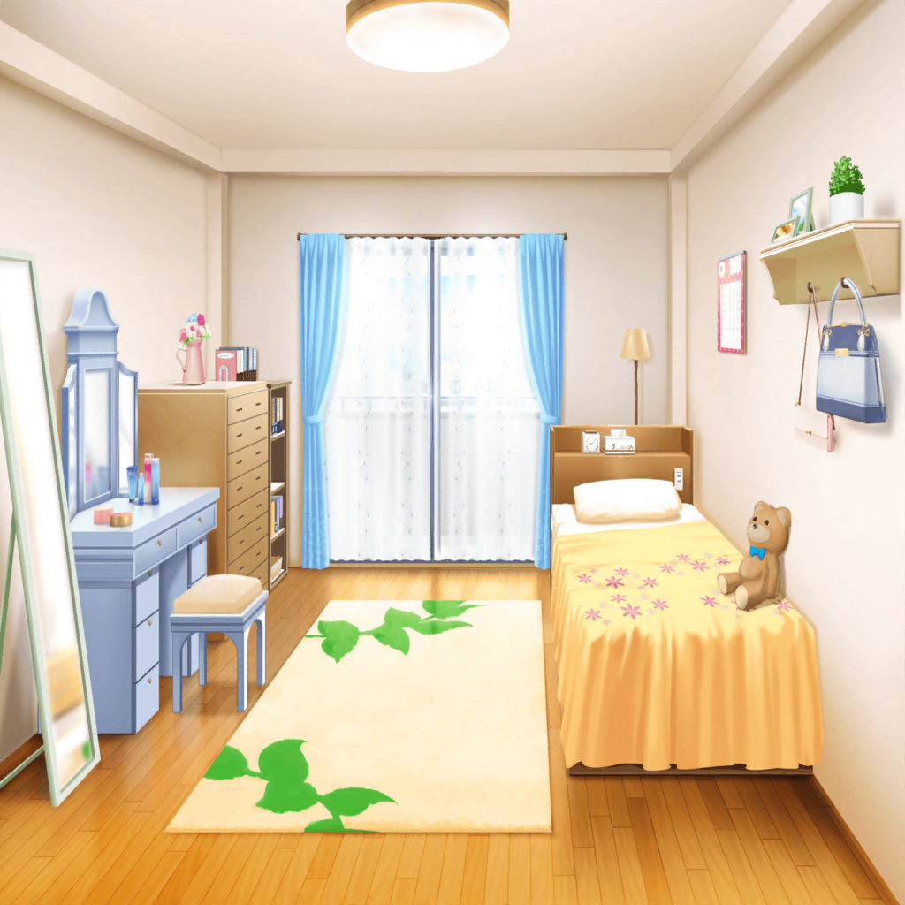

翌日
芸能事務所
千聖
おはようございます
彩
あっ、千聖ちゃん……おはよう
イヴ・麻弥
お、おはようございますっ
日菜
おっはよー
千聖
みんな、聞いてほしいことがあるのだけど……
彩
千聖ちゃん、ごめんなさい！
千聖
えっ？ なんのこと？
彩
昨日、稽古の邪魔して、怒らせちゃったよね……
千聖
邪魔だなんて全然思っていないし、怒ってもないわよ
彩
じゃあ昨日のは……
千聖
彩ちゃん、これから説明させてもらうわね
千聖
改めてみんな、昨日は見学に来てくれてありがとう。
せっかく来てくれたのに、『なんでもできるなんて思わないで！』
なんて言って、気分悪くさせてしまったわよね
一同
……
千聖
本当にごめんなさい
千聖
みんなは私のことをすごい、なんでもできるっていうけれど、
そんなことはないわ。
私は自分なりに努力していただけなの
千聖
みんなが見にきてくれた時、私は全然余裕がなくて……
『がんばれ！』って言ってくれた時は、プレッシャーを
感じてしまって、言葉通りに受け取れていなかったわ
千聖
落ち着いてから考えたら、みんな心から私を
応援してくれていたってわかったの。
昨日は『帰って』なんて言って、ごめんなさい
彩
千聖ちゃんだって頑張ってたんだよね……
一生懸命やってたのに
わかってあげられなくてごめんなさい
麻弥
目標に向かって苦しんだり悩んだりするのは、
みんな同じだったんですよね
イヴ
そうですっ！
芸の道も、ブシドーと一緒です！
極めるには、たゆまぬ努力が必要なんですよねっ
日菜
そうそう、大丈夫だよ～
全部わかったから。ねっ
千聖
みんな……
彩
困ったことがあったら、力になりたいから相談してね！
千聖
ありがとう。
一人で片付けようとするのは、
子役時代からの悪い癖かもしれないわね
日菜
ところでさ、千聖ちゃんが演じてた妹役なんだけど、
どっちかっていうと千聖ちゃんがしゃべってるように
見えたんだよねー。もっと大げさにやってもいいかもしれないよ
麻弥
ジブンはお姉さんへの気持ちをもっと
前面に出してもいいかなって思いましたね
彩
うんうん、熱い千聖ちゃん、見てみたいなぁ
イヴ
ネッケツな妹さんですか？ ブシドーですね！
千聖
（いろいろな意見があるのね……
私ひとりでは思いつかなかったわ。
みんなの考えを聞くのは大事なことなのね）
千聖
みんな、ありがとう。
参考にしてみるわ
日菜
昨日と違って、千聖ちゃん、
素直にあたし達の言うこと聞いてくれるんだね～
千聖
心境の変化があったのよ。
……そうだわ、
みんな、レッスンが終わったら私に付き合ってくれる？
彩
いいけど……どこか行くの？
千聖
ええ。みんなにお詫びとお礼を兼ねて、
お茶をごちそうさせてほしいの
イヴ
チサトさんとお茶ですか？ わぁ、楽しみです～！
麻弥
お詫びなんて……気にしなくていいんですよ？
千聖
私の気がすまないのよ。
それに、ゆっくりみんなと話もしたかったし
彩
そっか。じゃあ、みんな、
千聖ちゃんに甘えてごちそうになっちゃおうよ！

羽沢珈琲店
つぐみ
いらっしゃいませ～！
彩
つぐみちゃん、お手伝い中だったんだね
麻弥
おつかれさまです！
日菜
あっ、つぐちゃんだ～
イヴ
ツグミさん、こんにちは！
千聖
つぐみちゃん、大勢で押しかけてしまってごめんなさい
つぐみ
いえいえ、大歓迎です。こちらへどうぞ～
サービスしちゃいますよ！
千聖
今日のおすすめは何かしら？
つぐみ
そうですね、紅茶とミルフィーユのセットがおすすめです！
麻弥
おいしそうですね～
日菜
じゃああたしそれにするー
彩・イヴ
私も～！
千聖
じゃあつぐみちゃん、そのセットを５つお願いできるかしら
つぐみ
はい、すぐお持ちしますね
千聖
そういえば、私の妹がミルフィーユ好きなのよ。
今度妹を連れてこようかしら
麻弥
えっ、千聖さん、妹さんいたんですか！？ 初耳です……
日菜
思えばさー、あたしたち千聖ちゃんのことほとんど知らないよね
イヴ
た、確かに……
プライベートが謎に包まれていますね！
千聖
ふふっ、隠してたわけじゃないわよ。言う機会がなかっただけで
日菜
じゃあさ、他には他には～？
千聖
他には……そうね、かわいがってる犬がいるわよ。
小さい頃から飼っているの
彩
へぇ、どんな犬なの？
千聖
ゴールデンレトリバーよ。
体は大きいけど、おとなしくていい子なの
麻弥
そうなんですか！ 意外ですね～
千聖さんはなんかこう、もっとマルチーズとか、チワワとか、
小さくてかわいい犬を飼っていそうなイメージでした
日菜
前はこういう話してくれなかったのに、
今日はたくさん話してくれるね
イヴ
そうですね！
今まで個人的な話することってあんまりなかったですし、
もっとこういう機会作りたいですねっ！
日菜
ねー！ うちのおねーちゃんも犬好きなんだよ。
千聖ちゃんと仲良くなれそう！
千聖
あら、紗夜ちゃんもなのね。知らなかったわ。
今度学校で話しかけてみようかしら

白鷺家 千聖の部屋
千聖
（今日は楽しかったわ……
初めて、みんなに本当の私を伝えられた気がする）
千聖
明日からまた、頑張りましょう